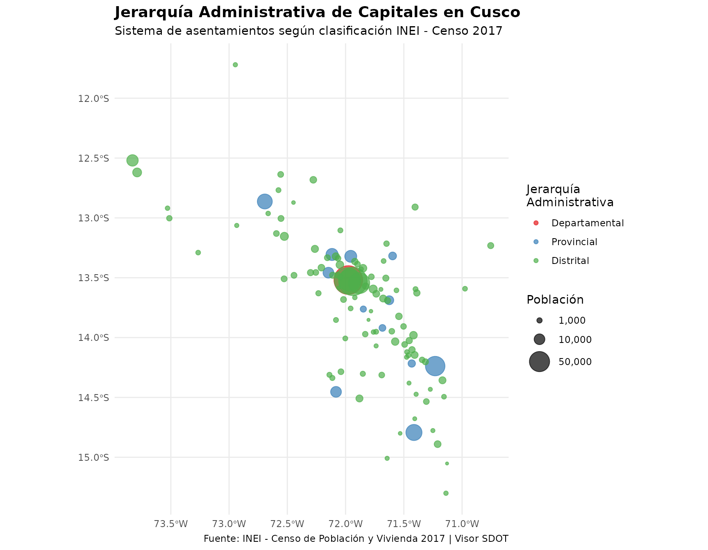
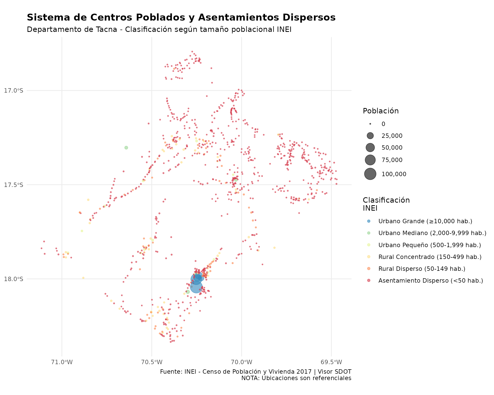
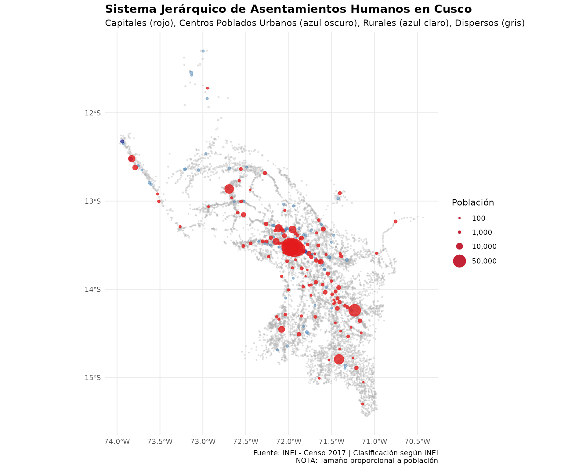
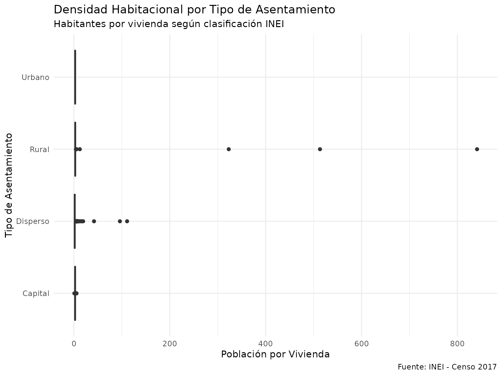
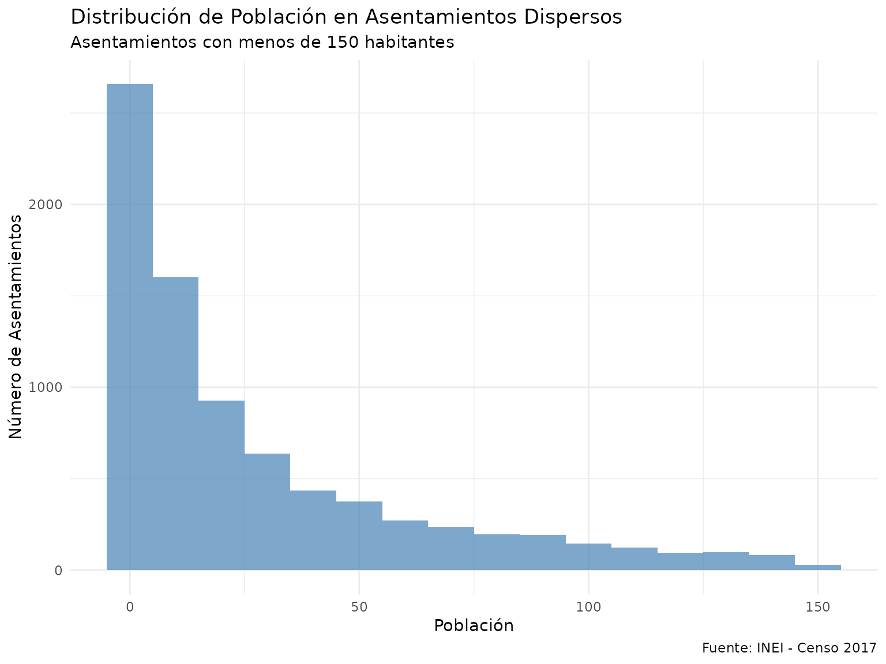

Sistema de Centros Poblados del Perú
Acceso a Capitales, Centros Poblados y Asentamientos Dispersos
Source:vignettes/sistema_centros_poblados.Rmd
sistema_centros_poblados.RmdIntroducción
Este documento presenta las funciones del paquete rsdot
para acceder y analizar el Sistema de Centros Poblados del
Perú, basado en la clasificación oficial del Instituto Nacional
de Estadística e Informática (INEI) según el Censo de Población y
Vivienda 2017.
Clasificación INEI de Asentamientos Humanos
El INEI clasifica los asentamientos humanos en el Perú utilizando una jerarquía basada en tamaño poblacional, organización de viviendas y disponibilidad de servicios:
1. Capitales (Administrativas)
Centros administrativos principales del país:
- Capital Departamental: Sede del gobierno regional (ej. Cusco, Arequipa, Lima)
- Capital Provincial: Sede de la administración provincial
- Capital Distrital: Sede del gobierno local distrital
Características: Centros urbanos con la mayor concentración de servicios públicos, infraestructura y población.
2. Centros Poblados (CPs)
Núcleos de población con las siguientes características:
- Definición: Asentamientos con nombre propio, población generalmente > 150 habitantes (según criterios del INEI)
- Organización: Viviendas agrupadas con cierta organización espacial
- Servicios: Infraestructura básica (agua, desagüe, luz) y vías de acceso
-
Clasificación:
- Urbanos: Viviendas agrupadas, con pistas/veredas, mayor densidad
- Rurales: Viviendas más dispersas, menor densidad (caseríos, comunidades)
Funciones Disponibles:
El paquete rsdot proporciona dos funciones
principales:
-
get_capitales(): Accede a las capitales departamentales, provinciales y distritales -
get_centros_poblados(): Accede a todos los centros poblados y asentamientos dispersos censados
Ambas funciones utilizan datos georreferenciados del Censo 2017, accesibles a través de la plataforma VIsor SDOT de la PCM.
Función 1: get_capitales()
Accede a las capitales administrativas (departamentales, provinciales y distritales) identificadas en el Censo 2017. Estas son los centros urbanos principales que sirven como sedes del gobierno en sus respectivos niveles.
Jerarquía de Capitales
El campo capital indica la jerarquía administrativa:
- 1: Capital departamental
- 2: Capital provincial
- 3: Capital distrital
Uso Básico
# Obtener todas las capitales de Cusco
capitales_cusco <- get_capitales(departamento = "CUSCO")
# Ver estructura de los datos
head(capitales_cusco)
#> Simple feature collection with 6 features and 9 fields
#> Geometry type: POINT
#> Dimension: XY
#> Bounding box: xmin: -72.05914 ymin: -13.58477 xmax: -71.88359 ymax: -13.49446
#> Geodetic CRS: WGS 84
#> # A tibble: 6 × 10
#> gid ubigeo nombdep nombprov nombdist codccpp cen_pob pob capital
#> <int> <chr> <chr> <chr> <chr> <chr> <chr> <int> <chr>
#> 1 33390 080101 CUSCO CUSCO CUSCO 0801010001 CUSCO 111930 1
#> 2 33426 080102 CUSCO CUSCO CCORCA 0801020001 CCORCA 265 3
#> 3 33448 080103 CUSCO CUSCO POROY 0801030001 POROY 1410 3
#> 4 33465 080104 CUSCO CUSCO SAN JERONIMO 0801040001 SAN JER… 55335 3
#> 5 33491 080105 CUSCO CUSCO SAN SEBASTIAN 0801050001 SAN SEB… 109915 3
#> 6 33505 080106 CUSCO CUSCO SANTIAGO 0801060001 SANTIAGO 92729 3
#> # ℹ 1 more variable: geom <POINT [°]>
# Resumen estadístico
summary(capitales_cusco$pob)
#> Min. 1st Qu. Median Mean 3rd Qu. Max.
#> 168 691 1448 6634 2759 111930Análisis por Jerarquía
# Clasificar capitales por tipo
capitales_cusco %>%
st_drop_geometry() %>%
mutate(
tipo = case_when(
capital == 1 ~ "Departamental",
capital == 2 ~ "Provincial",
capital == 3 ~ "Distrital"
)
) %>%
group_by(tipo) %>%
summarise(
n_capitales = n(),
pob_total = sum(pob, na.rm = TRUE),
pob_promedio = round(mean(pob, na.rm = TRUE)),
pob_mediana = median(pob, na.rm = TRUE)
)
#> # A tibble: 3 × 5
#> tipo n_capitales pob_total pob_promedio pob_mediana
#> <chr> <int> <int> <dbl> <dbl>
#> 1 Departamental 1 111930 111930 111930
#> 2 Distrital 99 466653 4714 1391
#> 3 Provincial 12 164388 13699 10176Identificar Capitales Provinciales
# Las capitales provinciales son centros urbanos importantes
capitales_prov <- capitales_cusco %>%
filter(capital == 2)
capitales_prov %>%
st_drop_geometry() %>%
select(nombprov, cen_pob, pob) %>%
arrange(desc(pob))
#> # A tibble: 12 × 3
#> nombprov cen_pob pob
#> <chr> <chr> <int>
#> 1 CANCHIS SICUANI 46102
#> 2 ESPINAR YAURI 28888
#> 3 LA CONVENCION QUILLABAMBA 23985
#> 4 URUBAMBA URUBAMBA 13942
#> 5 CALCA CALCA 13519
#> 6 ANTA ANTA 10182
#> 7 CHUMBIVILCAS SANTO TOMAS 10170
#> 8 QUISPICANCHI URCOS 5968
#> 9 PAUCARTAMBO PAUCARTAMBO 3990
#> 10 CANAS YANAOCA 3307
#> 11 ACOMAYO ACOMAYO 2516
#> 12 PARURO PARURO 1819Visualización de la Jerarquía Administrativa
# Crear categorías para visualización
capitales_cusco <- capitales_cusco %>%
mutate(
tipo_capital = case_when(
capital == 1 ~ "Departamental",
capital == 2 ~ "Provincial",
capital == 3 ~ "Distrital"
),
tipo_capital = factor(
tipo_capital,
levels = c("Departamental", "Provincial", "Distrital")
)
)
# Mapa de capitales por jerarquía administrativa
ggplot(capitales_cusco) +
geom_sf(aes(color = tipo_capital, size = pob), alpha = 0.7) +
scale_size_continuous(
name = "Población",
range = c(1, 12),
labels = scales::comma,
breaks = c(1000, 10000, 50000, 150000, 300000)
) +
scale_color_manual(
name = "Jerarquía\nAdministrativa",
values = c(
"Departamental" = "#E41A1C", # Rojo - Capital departamental
"Provincial" = "#377EB8", # Azul - Capitales provinciales
"Distrital" = "#4DAF4A" # Verde - Capitales distritales
)
) +
theme_minimal() +
labs(
title = "Jerarquía Administrativa de Capitales en Cusco",
subtitle = "Sistema de asentamientos según clasificación INEI - Censo 2017",
caption = "Fuente: INEI - Censo de Población y Vivienda 2017 | Visor SDOT"
) +
theme(
legend.position = "right",
plot.title = element_text(face = "bold", size = 14),
plot.subtitle = element_text(size = 11)
)
Función 2: get_centros_poblados()
Accede al universo completo de centros poblados y asentamientos dispersos censados en 2017, incluyendo tanto núcleos urbanos organizados como viviendas dispersas en zonas rurales.
Esta función proporciona acceso a:
- Centros Poblados Urbanos: Asentamientos con viviendas agrupadas, pistas/veredas, servicios básicos
- Centros Poblados Rurales: Caseríos, comunidades, anexos con cierta organización
- Asentamientos Dispersos: Viviendas aisladas, poblaciones muy pequeñas
Datos Disponibles
La función proporciona información detallada sobre:
- Población: Total de habitantes
- Vivienda: Total de viviendas, viviendas particulares, viviendas ocupadas
- Ubicación: Coordenadas geográficas (REFERENCIAL)
- Administración: Departamento, provincia, distrito
Uso Básico
# Obtener centros poblados de Tacna (departamento pequeño para ejemplo)
cp_tacna <- get_centros_poblados(departamento = "TACNA")
# Estructura de los datos
head(cp_tacna)
#> Simple feature collection with 6 features and 20 fields
#> Geometry type: POINT
#> Dimension: XY
#> Bounding box: xmin: -70.50587 ymin: -18.0234 xmax: -69.54312 ymax: -17.4228
#> Geodetic CRS: WGS 84
#> # A tibble: 6 × 21
#> ubigeo codccpp nombdep nombprov nombdist cen_pob pob viv viv_part
#> <chr> <chr> <chr> <chr> <chr> <chr> <int> <int> <int>
#> 1 230105 2301050019 TACNA TACNA INCLAN PROTER SAMA 423 431 431
#> 2 230107 2301070006 TACNA TACNA PALCA JAJNUNI 2 10 10
#> 3 230107 2301070009 TACNA TACNA PALCA SIQUINE 1 12 12
#> 4 230107 2301070059 TACNA TACNA PALCA ATASPACA 61 32 32
#> 5 230101 2301010001 TACNA TACNA TACNA TACNA 86977 30558 30324
#> 6 230101 2301010005 TACNA TACNA TACNA PARA GRANDE 10 69 69
#> # ℹ 12 more variables: viv_part_o <int>, viv_part_1 <int>, pob_viv_pa <int>,
#> # y <dbl>, x <dbl>, fuente <chr>, revision <chr>, cap <chr>, capital <chr>,
#> # iddpto <chr>, idprov <chr>, geom <POINT [°]>
# Estadísticas generales
cat("Total de asentamientos censados:", nrow(cp_tacna), "\n")
#> Total de asentamientos censados: 944
cat("Población total:", format(sum(cp_tacna$pob, na.rm = TRUE), big.mark = ","), "\n")
#> Población total: 329,332
cat("Viviendas totales:", format(sum(cp_tacna$viv, na.rm = TRUE), big.mark = ","), "\n")
#> Viviendas totales: 151,445Clasificación por Tamaño Poblacional
Siguiendo los criterios del INEI para clasificación urbano-rural:
# Clasificar centros poblados según tamaño
cp_clasificados <- cp_tacna %>%
mutate(
categoria = case_when(
pob >= 10000 ~ "Urbano Grande (≥10,000 hab.)",
pob >= 2000 ~ "Urbano Mediano (2,000-9,999 hab.)",
pob >= 500 ~ "Urbano Pequeño (500-1,999 hab.)",
pob >= 150 ~ "Rural Concentrado (150-499 hab.)",
pob >= 50 ~ "Rural Disperso (50-149 hab.)",
TRUE ~ "Asentamiento Disperso (<50 hab.)"
),
categoria = factor(
categoria,
levels = c(
"Urbano Grande (≥10,000 hab.)",
"Urbano Mediano (2,000-9,999 hab.)",
"Urbano Pequeño (500-1,999 hab.)",
"Rural Concentrado (150-499 hab.)",
"Rural Disperso (50-149 hab.)",
"Asentamiento Disperso (<50 hab.)"
)
)
)
# Distribución por categoría
distribucion <- cp_clasificados %>%
st_drop_geometry() %>%
group_by(categoria) %>%
summarise(
n_asentamientos = n(),
pob_total = sum(pob, na.rm = TRUE),
pob_promedio = round(mean(pob, na.rm = TRUE)),
viv_total = sum(viv, na.rm = TRUE)
) %>%
mutate(
pct_asentamientos = round(n_asentamientos / sum(n_asentamientos) * 100, 1),
pct_poblacion = round(pob_total / sum(pob_total) * 100, 1)
)
print(distribucion)
#> # A tibble: 6 × 7
#> categoria n_asentamientos pob_total pob_promedio viv_total pct_asentamientos
#> <fct> <int> <int> <dbl> <int> <dbl>
#> 1 Urbano Gra… 5 279499 55900 108299 0.5
#> 2 Urbano Med… 3 11768 3923 6257 0.3
#> 3 Urbano Peq… 12 9460 788 6028 1.3
#> 4 Rural Conc… 59 17502 297 13542 6.2
#> 5 Rural Disp… 71 6458 91 5930 7.5
#> 6 Asentamien… 794 4645 6 11389 84.1
#> # ℹ 1 more variable: pct_poblacion <dbl>Visualización del Sistema de Asentamientos
# Mapa del sistema completo de asentamientos
ggplot(cp_clasificados) +
geom_sf(aes(color = categoria, size = pob), alpha = 0.6) +
scale_size_continuous(
name = "Población",
range = c(0.5, 8),
labels = scales::comma
) +
scale_color_brewer(
name = "Clasificación\nINEI",
palette = "Spectral",
direction = -1
) +
theme_minimal() +
labs(
title = "Sistema de Centros Poblados y Asentamientos Dispersos",
subtitle = "Departamento de Tacna - Clasificación según tamaño poblacional INEI",
caption = "Fuente: INEI - Censo de Población y Vivienda 2017 | Visor SDOT\nNOTA: Ubicaciones son referenciales"
) +
theme(
legend.position = "right",
plot.title = element_text(face = "bold", size = 14),
legend.box = "vertical"
)
Análisis de Concentración Urbana vs Rural
# Clasificación urbano-rural según INEI (> 2000 hab = urbano)
cp_tacna_ur <- cp_tacna %>%
mutate(
clasificacion = if_else(pob >= 2000, "Urbano", "Rural/Disperso")
)
# Análisis de concentración
concentracion <- cp_tacna_ur %>%
st_drop_geometry() %>%
group_by(clasificacion) %>%
summarise(
n_asentamientos = n(),
pob_total = sum(pob, na.rm = TRUE),
viv_total = sum(viv, na.rm = TRUE)
) %>%
mutate(
pct_asentamientos = round(n_asentamientos / sum(n_asentamientos) * 100, 1),
pct_poblacion = round(pob_total / sum(pob_total) * 100, 1)
)
print(concentracion)
#> # A tibble: 2 × 6
#> clasificacion n_asentamientos pob_total viv_total pct_asentamientos
#> <chr> <int> <int> <int> <dbl>
#> 1 Rural/Disperso 936 38065 36889 99.2
#> 2 Urbano 8 291267 114556 0.8
#> # ℹ 1 more variable: pct_poblacion <dbl>
# Interpretación
cat("\nInterpretación:\n")
#>
#> Interpretación:
cat("- Los asentamientos urbanos (≥2,000 hab.) representan el",
concentracion$pct_asentamientos[concentracion$clasificacion == "Urbano"],
"% de los asentamientos\n")
#> - Los asentamientos urbanos (≥2,000 hab.) representan el 0.8 % de los asentamientos
cat("- Pero concentran el",
concentracion$pct_poblacion[concentracion$clasificacion == "Urbano"],
"% de la población total\n")
#> - Pero concentran el 88.4 % de la población totalAnálisis Integrado: Capitales en el Sistema de Asentamientos
Comparar Capitales con su Contexto Poblacional
# Obtener datos completos de Cusco
capitales <- get_capitales(departamento = "CUSCO")
centros <- get_centros_poblados(departamento = "CUSCO")
# Identificar centros poblados que son capitales
capitales_ids <- unique(capitales$codccpp)
centros <- centros %>%
mutate(
es_capital = codccpp %in% capitales_ids,
tipo_asentamiento = case_when(
es_capital ~ "Capital (administrativa)",
pob >= 2000 ~ "Centro Poblado Urbano",
pob >= 500 ~ "Centro Poblado Rural",
pob >= 150 ~ "Centro Poblado Pequeño",
TRUE ~ "Asentamiento Disperso"
)
)
# Estadísticas comparativas
comparacion <- centros %>%
st_drop_geometry() %>%
group_by(tipo_asentamiento) %>%
summarise(
n = n(),
pob_total = sum(pob, na.rm = TRUE),
pob_promedio = round(mean(pob, na.rm = TRUE)),
viv_total = sum(viv, na.rm = TRUE)
) %>%
mutate(
pct_asentamientos = round(n / sum(n) * 100, 1),
pct_poblacion = round(pob_total / sum(pob_total) * 100, 1)
) %>%
arrange(desc(pob_total))
print(comparacion)
#> # A tibble: 5 × 7
#> tipo_asentamiento n pob_total pob_promedio viv_total pct_asentamientos
#> <chr> <int> <int> <dbl> <int> <dbl>
#> 1 Capital (administrat… 112 742971 6634 232353 1.2
#> 2 Asentamiento Disperso 8105 228559 28 122551 90.4
#> 3 Centro Poblado Peque… 671 165563 247 67742 7.5
#> 4 Centro Poblado Rural 77 61313 796 21447 0.9
#> 5 Centro Poblado Urbano 3 7121 2374 2776 0
#> # ℹ 1 more variable: pct_poblacion <dbl>Visualización del Sistema Completo
# Mapa que muestra la jerarquía completa del sistema de asentamientos
ggplot() +
# Primero: asentamientos dispersos y pequeños (fondo)
geom_sf(
data = centros %>% filter(!es_capital, pob < 500),
aes(size = pob),
color = "gray70",
alpha = 0.3
) +
# Segundo: centros poblados medianos
geom_sf(
data = centros %>% filter(!es_capital, pob >= 500, pob < 2000),
aes(size = pob),
color = "steelblue",
alpha = 0.5
) +
# Tercero: centros poblados urbanos (no capitales)
geom_sf(
data = centros %>% filter(!es_capital, pob >= 2000),
aes(size = pob),
color = "darkblue",
alpha = 0.6
) +
# Cuarto: capitales (destacadas)
geom_sf(
data = centros %>% filter(es_capital),
aes(size = pob),
color = "#E41A1C",
alpha = 0.8
) +
scale_size_continuous(
name = "Población",
range = c(0.3, 10),
labels = scales::comma,
breaks = c(100, 1000, 10000, 50000, 200000)
) +
theme_minimal() +
labs(
title = "Sistema Jerárquico de Asentamientos Humanos en Cusco",
subtitle = "Capitales (rojo), Centros Poblados Urbanos (azul oscuro), Rurales (azul claro), Dispersos (gris)",
caption = "Fuente: INEI - Censo 2017 | Clasificación según INEI\nNOTA: Tamaño proporcional a población"
) +
theme(
legend.position = "right",
plot.title = element_text(face = "bold", size = 14)
)
Análisis de Vivienda y Servicios
Características Habitacionales por Tipo de Asentamiento
# Análisis de vivienda por tipo de asentamiento
vivienda_stats <- centros %>%
st_drop_geometry() %>%
filter(viv > 0) %>%
mutate(
tipo = case_when(
es_capital ~ "Capital",
pob >= 2000 ~ "Urbano",
pob >= 500 ~ "Rural",
TRUE ~ "Disperso"
)
) %>%
group_by(tipo) %>%
summarise(
n_asentamientos = n(),
pob_total = sum(pob, na.rm = TRUE),
viv_total = sum(viv, na.rm = TRUE),
viv_ocupadas = sum(viv_part_o, na.rm = TRUE),
pob_por_vivienda = round(pob_total / viv_total, 2),
tasa_ocupacion = round(viv_ocupadas / sum(viv_part, na.rm = TRUE) * 100, 1)
)
print(vivienda_stats)
#> # A tibble: 4 × 7
#> tipo n_asentamientos pob_total viv_total viv_ocupadas pob_por_vivienda
#> <chr> <int> <int> <int> <int> <dbl>
#> 1 Capital 112 742971 232353 211481 3.2
#> 2 Disperso 8776 394122 190293 171082 2.07
#> 3 Rural 77 61313 21447 18917 2.86
#> 4 Urbano 3 7121 2776 2393 2.57
#> # ℹ 1 more variable: tasa_ocupacion <dbl>Densidad Habitacional
# Análisis de densidad habitacional
cp_densidad <- centros %>%
filter(viv > 0) %>%
mutate(
pob_por_viv = pob / viv,
categoria = case_when(
es_capital ~ "Capital",
pob >= 2000 ~ "Urbano",
pob >= 500 ~ "Rural",
TRUE ~ "Disperso"
)
)
# Boxplot de población por vivienda
ggplot(cp_densidad %>% st_drop_geometry(),
aes(x = categoria, y = pob_por_viv, fill = categoria)) +
geom_boxplot() +
scale_fill_brewer(palette = "Set2") +
coord_flip() +
labs(
title = "Densidad Habitacional por Tipo de Asentamiento",
subtitle = "Habitantes por vivienda según clasificación INEI",
x = "Tipo de Asentamiento",
y = "Población por Vivienda",
caption = "Fuente: INEI - Censo 2017"
) +
theme_minimal() +
theme(legend.position = "none")
Análisis Provincial y Distrital
Distribución de Asentamientos por Distrito
# Análisis por distrito
dist_stats <- centros %>%
st_drop_geometry() %>%
group_by(nombdist) %>%
summarise(
n_asentamientos = n(),
n_capitales = sum(es_capital),
n_urbanos = sum(pob >= 2000),
n_rurales = sum(pob < 2000 & pob >= 150),
n_dispersos = sum(pob < 150),
pob_total = sum(pob, na.rm = TRUE),
viv_total = sum(viv, na.rm = TRUE)
) %>%
arrange(desc(pob_total)) %>%
head(10)
print(dist_stats)
#> # A tibble: 10 × 8
#> nombdist n_asentamientos n_capitales n_urbanos n_rurales n_dispersos
#> <chr> <int> <int> <int> <int> <int>
#> 1 CUSCO 36 1 1 6 29
#> 2 SAN SEBASTIAN 14 1 1 6 7
#> 3 SANTIAGO 23 1 1 5 17
#> 4 WANCHAQ 1 1 1 0 0
#> 5 SICUANI 302 1 1 18 283
#> 6 SAN JERONIMO 26 1 1 3 22
#> 7 ESPINAR 202 1 1 3 198
#> 8 SANTA ANA 86 1 1 5 80
#> 9 ECHARATE 3 296 1 0 25 271
#> 10 PICHARI 69 1 3 13 53
#> # ℹ 2 more variables: pob_total <int>, viv_total <int>Casos de Uso Especializados
1. Análisis de Accesibilidad a Servicios
# Ejemplo: Calcular distancia de asentamientos rurales a centros urbanos
library(sf)
# Identificar centros urbanos (≥ 2000 hab)
urbanos <- centros %>%
filter(pob >= 2000)
# Identificar asentamientos rurales dispersos
rurales <- centros %>%
filter(pob < 500)
# Calcular distancia al centro urbano más cercano
rurales_con_dist <- rurales %>%
mutate(
centro_mas_cercano_idx = st_nearest_feature(., urbanos),
distancia_km = as.numeric(st_distance(
geometry,
urbanos$geometry[centro_mas_cercano_idx],
by_element = TRUE
)) / 1000 # Convertir a km
)
# Estadísticas de accesibilidad
summary(rurales_con_dist$distancia_km)2. Jerarquía Urbana Regional
# Análisis de jerarquía urbana usando regla rango-tamaño
centros_urbanos <- centros %>%
filter(pob >= 2000) %>%
arrange(desc(pob)) %>%
mutate(
rango = row_number(),
pob_esperada = first(pob) / rango, # Ley de Zipf
ratio = round(pob / pob_esperada, 2)
)
# Top 10 centros urbanos
top_urbanos <- centros_urbanos %>%
st_drop_geometry() %>%
select(rango, cen_pob, nombdist, pob, pob_esperada, ratio) %>%
head(10)
print(top_urbanos)
#> # A tibble: 10 × 6
#> rango cen_pob nombdist pob pob_esperada ratio
#> <int> <chr> <chr> <int> <dbl> <dbl>
#> 1 1 CUSCO CUSCO 111930 111930 1
#> 2 2 SAN SEBASTIAN SAN SEBASTIAN 109915 55965 1.96
#> 3 3 SANTIAGO SANTIAGO 92729 37310 2.49
#> 4 4 WANCHAQ WANCHAQ 58541 27982. 2.09
#> 5 5 SAN JERONIMO SAN JERONIMO 55335 22386 2.47
#> 6 6 SICUANI SICUANI 46102 18655 2.47
#> 7 7 YAURI ESPINAR 28888 15990 1.81
#> 8 8 QUILLABAMBA SANTA ANA 23985 13991. 1.71
#> 9 9 URUBAMBA URUBAMBA 13942 12437. 1.12
#> 10 10 CALCA CALCA 13519 11193 1.213. Patrón de Dispersión Rural
# Análisis del patrón de asentamientos rurales dispersos
dispersos <- centros %>%
filter(pob < 150)
# Distribución de población en asentamientos dispersos
ggplot(dispersos %>% st_drop_geometry(), aes(x = pob)) +
geom_histogram(binwidth = 10, fill = "steelblue", alpha = 0.7) +
labs(
title = "Distribución de Población en Asentamientos Dispersos",
subtitle = "Asentamientos con menos de 150 habitantes",
x = "Población",
y = "Número de Asentamientos",
caption = "Fuente: INEI - Censo 2017"
) +
theme_minimal()
Referencias y Recursos
Fuentes de Datos
- INEI (2017). Censo de Población y Vivienda 2017. Instituto Nacional de Estadística e Informática.
Funciones Relacionadas
-
get_red_vial_nacional()- Red vial nacional del Perú -
get_red_vial_departamental()- Red vial departamental -
get_departamentos()- Límites departamentales